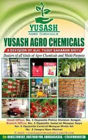

Votre solution pour une protection efficace des cultures
Yusash Agro Chemicals est un fournisseur fiable de produits agrochimiques et de protection des cultures de haute qualité à Yola. Nous sommes spécialisés dans la fourniture d'une large gamme d'herbicides, de pesticides et de fongicides efficaces, sûrs et adaptés aux besoins des agriculteurs locaux. Nous nous engageons à aider les agriculteurs à protéger leurs cultures contre les ravageurs et les maladies, assurant ainsi une récolte saine et abondante. Notre personnel compétent offre des conseils d'experts sur la sélection et l'application des produits afin de maximiser les résultats.